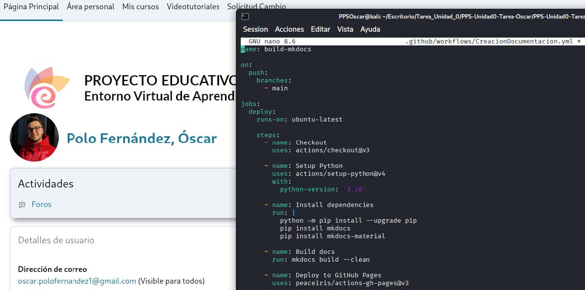
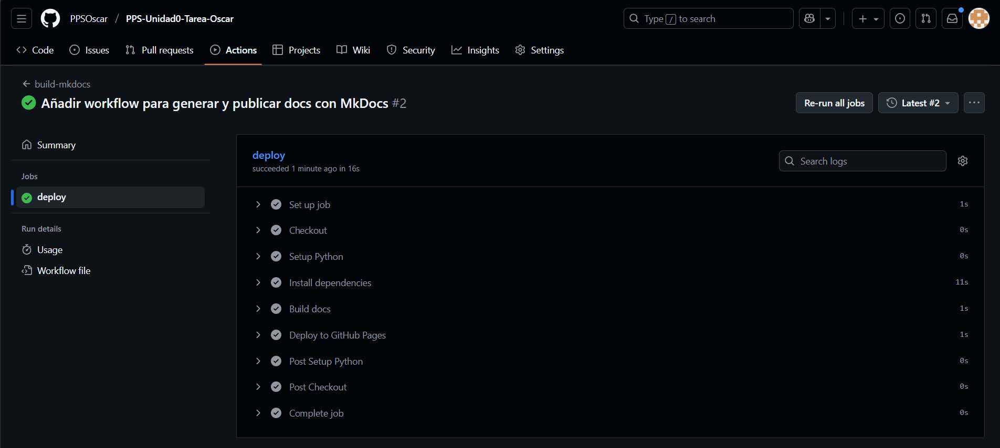

GitHub Actions – Automatización con Workflow
En este apartado documento y recopilo todo el desarrollo del apartado GitHub Actions, explicando paso a paso cómo he configurado el workflow que genera la documentación con MkDocs y la publica automáticamente en la rama gh-pages.
1. Objetivo del workflow
Incluyo en este apartado:
- Instalación de MkDocs en un runner de GitHub Actions.
- Construcción automática de la documentación ubicada en docs/.
- Generación del directorio site/ con el resultado final.
- Publicación de esos archivos en la rama gh-pages.
- Actualización de GitHub Pages sin intervención manual.
Con este proceso se consigue que cada actualización del repositorio sea un despliegue automático.
2. Ubicación del archivo del workflow
El archivo se crea dentro del siguiente directorio. Ya le he creado en la creación de la estructura del repositorio.
.github/workflows/CreacionDocumentacion.yml
Este archivo .yml es el que automatiza la creación y publicación de la documentación MkDocs.
3. Contenido y explicación del archivo YAML
El contenido del archivo .yml es el siguiente:
yaml
name: build-mkdocs
on:
push:
branches:
- main
jobs:
deploy:
runs-on: ubuntu-latest
steps:
- name: Checkout
uses: actions/checkout@v3
- name: Setup Python
uses: actions/setup-python@v4
with:
python-version: '3.10'
- name: Install dependencies
run: |
python -m pip install --upgrade pip
pip install mkdocs
- name: Build docs
run: mkdocs build --clean
- name: Deploy to GitHub Pages
uses: peaceiris/actions-gh-pages@v3
with:
github_token: ${{ secrets.GITHUB_TOKEN }}
publish_dir: ./site
publish_branch: gh-pages
A continuación procedo a comentar por partes el funcionamiento de este archivo:
3.1 Activación del workflow
yaml
on:
push:
branches:
- main
- Esto significa que cada vez que se haga un git push a la rama main, el workflow se activará automáticamente.
3.2 Preparación del entorno
El runner (el que ejecuta el workflow) utilizado es Ubuntu:
yaml
runs-on: ubuntu-latest
A continuación, se descargan los archivos del repositorio:
yaml
uses: actions/checkout@v3
Se instala Python:
yaml
uses: actions/setup-python@v4
with:
python-version: '3.10'
3.3 Instalación de MkDocs
Se instala MKDocs. MkDocs es quien convierte MarkDown en HTML.
yaml
pip install mkdocs
3.4 Construcción de la documentación
Se ejecuta lo siguiente:
yaml
mkdocs build --clean
Este comando realiza lo siguiente:
- Lee el contenido de docs/
- Lo transforma en HTML
- Lo almacena en la carpeta site/
- Limpia versiones anteriores
3.5 Publicación en GitHub Pages
Se usa la acción peaceiris/actions-gh-pages:
yaml
uses: peaceiris/actions-gh-pages@v3
with:
github_token: ${{ secrets.GITHUB_TOKEN }}
publish_dir: ./site
publish_branch: gh-pages
Esto lo que hace es publicar la carpeta site/ en la rama gh-pages de manera automática.
A continuación muestro una captura en la que muestro parte de mi archivo .yml:

Tras modificar el archivo .yml subo los cambios al repositorio.
6 Ejecución del workflow
Una vez hemos subido el .yml a nuestro repositorio, desde la pestaña Actions de nuestra cuenta de GitHub podemos ver los logs de ejecución de los diferentes apartados que he comentado en el punto anterior. Si hay algún error se nos mostrará, y si se ejecuta correctamente se marcará con un check verde tras finalizar la ejecución.
Muestro los logs de mi workflow:

6.1 Problema con los permisos.
Es posible que la ejecución del workflow de un error en el log relacionado con los permisos. Esto es debido a que, de forma predeterminada, en las cuentas de GitHub los permisos de los workflows no están activados para lectura y escritura. Para solucionarlo:
- En mi repositorio de GitHub --> Settings --> Actions --> General --> Permisos Workflow --> Read and Write